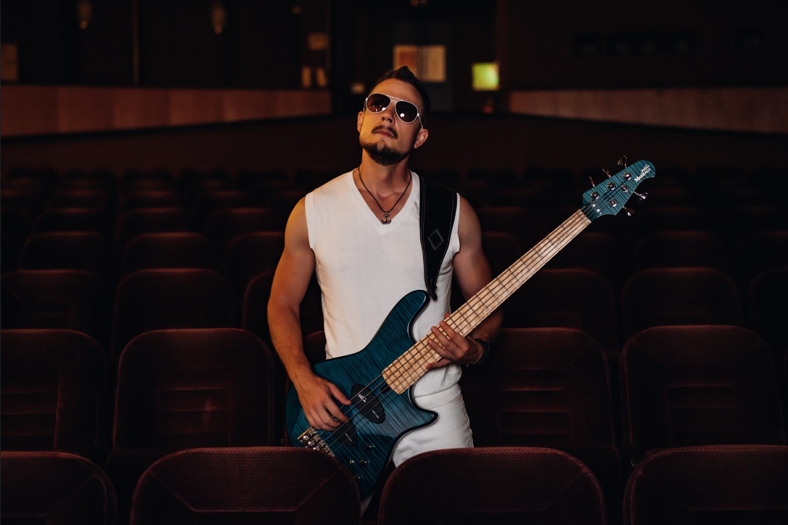

Tobias M Diez
Tobias Diez holds a B.Sc. In Technology Management from University of
Stuttgart, a B.A. in Business Administration from Cooperative State
University Stuttgart and a M.Sc. In Digital Currency from University
of Nicosia.
He is working at Putzmeister Holding GmbH since 2019 in the Strategic
Purchasing department as a Project Purchasing Manager which gives him
a great overview of almost every category in industrial manufacturing
and therefore an extensive knowledge of applied economics and the
current states of the global economy itself. Before...
Show more...